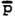
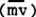

|
CHARGELESS MASS SYSTEM VECTOR This
type of vector actually is the essential vector of mechanics, involving
mass-motion (momentum), force (mass-motion change), etc. The
fundamental difference between this type of vector and the geometer's
vector is the presence of smeared mass existing in time (i.e.,
mass-time), welded together with a geometer's vector, but with no seam
in the middle, into a new kind of "vector" AS A SYSTEM.
The vector is the SYSTEM EXISTING IN TIME .
where, by the symbol we mean "coupled to"; but we actually have
where we are not allowed to separate (even in thought) m
and  is a canonical variable linked to length, in any observable physical change. (The REASON p is canonically linked to ΔL is because is the time-rate of length-smearing of m. If there is no length, there is no length-smearing of m to have a time rate OF in the first place.)Note that, not only is
but also
which is a much stronger and quite different statement. That is, is IDENTICALLY  , not just calculably EQUAL TO (m)( |